7 grandes étapes, des Andes péruviennes au Salar bolivien jusqu'à l'océan chilien.
Lima → Nazca5-6 septembre
Arequipa7-9 septembre
Cusco · Vallée Sacrée9-12 septembre
La Paz · Cholitas12-14 septembre
Salar d'Uyuni15-18 septembre
San Pedro de Atacama18-20 septembre
Arica21-24 septembre
Le colibri de NazcaPlaza de Armas, ArequipaPlaza de Armas, CuscoSalinas de MarasLa Paz, ville-cuvetteSalar d'UyuniVallée de la Lune, AtacamaEl Morro d'Arica
Profil des altitudes
Aperçu des altitudes traversées. Montées progressives, redescente possible en moins d'une journée — sauf pendant le tour Uyuni (3 jours en altiplano).
Étape (nuit ou passage court)
Point d'altitude marqué
Jour par jour
Clique sur une journée pour ouvrir le détail.
1Samedi 5 septembreLima → Nazca · arrivée et bus
06:30Arrivée Lima vol IB6660 depuis Madrid
07:00Au tapis à bagages, on prévient le chauffeur par WhatsApp — c'est à ce signal qu'il s'approche
07:30Sortie de douane · immigration et bagages prennent en général une bonne heure · passage au bancomat dans le hall
07:45Van privé pré-réservé · rendez-vous Puerta 3 des arrivées internationales, chauffeur avec pancarte, tout le monde dans le même véhicule avec les bagages → Terminal Cruz del Sur Javier Prado, Av. Javier Prado Este 1109 (30-40 min, samedi)
08:40Dépôt des bagages au terminal
08:45-10:00Petit-déjeuner dans la rue du terminal · El Refugio ouvre à 8h et quatre hôtels sont à cinq minutes à pied, on trouvera. Première vraie table du voyage plutôt qu'une salle d'attente
10:30Retour au terminal, embarquement
11:00Bus Cruz del Sur Evolution · Lima → Nazca (environ 7h) · 4 sièges contigus au premier rang du pont haut (2-01 à 2-04) · escales Paracas et Ica
~18:00Arrivée Nazca, check-in Casa Andina Standard, repos
soirDîner léger à l'hôtel
Pas de balade Lima avec bagages, on enchaîne directement bus de jour. Reposant.
2Dimanche 6 septembreMirador de Nazca · bus de nuit
09:00Mirador de la Panaméricaine (tour de 13 m, les Mains, l'Arbre)
midiDéjeuner Nazca, sieste hôtel
14:00Acueductos de Cantalloc (balade tranquille, 2h)
19:00Dîner léger
22:30Bus Cruz del Sur Suite 160° · Nazca → Arequipa · 4 sièges pont haut bloc 2×2 (Carole+Arnaud / Nina+David)
Late check-out demandé à Casa Andina pour pouvoir se doucher avant le bus de nuit. Le survol des lignes de Nazca est abandonné (décision du 23/8, après l'accident du 1er août) — détail dans la section Activités phares.
matinPetit-déjeuner cool, balade Plaza de Armas, journée qui ne presse plus
14:30Check-out du Palla Arequipa, dernière flânerie
18:05⚠ Vol LATAM LA2329 Arequipa → Cusco (était LA2321 à 14:00, décalé par LATAM le 25/8)
19:05Arrivée Cusco, de nuit
19:35Transfert privé aéroport → Monasterio San Pedro (organisé par l'hôtel, S/ 40)
20:00Check-in Hotel Monasterio San Pedro, dîner léger direct (soupe quinoa) — pas de balade, repos obligatoire
Saut d'altitude · 2 335 m vers 3 400 m. Coca, hydratation, repos. Arrivée de nuit = moins de temps éveillé pour surveiller le mal des montagnes avant le coucher : vigilance reportée au lendemain matin.
6Jeudi 10 septembreVallée Sacrée à contresens (anti-foule)
Boucle journée avec chauffeur privé en camioneta confortable pour les 4 (organisée par le Monasterio, S/ 400 le véhicule), dans l'ordre inversé pour éviter la foule (les groupes touristiques font Cusco → Pisac → Maras → Ollanta, on fait l'inverse).
06:45Lever, petit-déjeuner rapide
07:30Départ Cusco
09:00Ollantaytambo · forteresse + village inca habité (~2h30) · premiers visiteurs
11:45Salinas de Maras · 3 000 bassins de sel rose (~1h)
13:00Déjeuner Urubamba (Wayra ou El Huacatay)
14:45Moray · terrasses circulaires (~1h)
16:00Maras viewpoint (~30 min)
17:00Trajet retour vers Cusco via Chinchero
18:00Dîner sur la route (Chinchero ou Urubamba) · ambiance village
20:00Arrivée Cusco · nuit Hotel Monasterio
Vallée Sacrée descend à environ 2 800 m · bénéfique pour l'acclimatation. Pas de changement d'hôtel : valises posées au Monasterio.
matinPetit-déjeuner, check-out, taxi vers aéroport
12:30Vol Avianca AV105 Cusco → La Paz (1h15, A320neo)
14:45Arrivée El Alto (4 060 m), taxi vers Sopocachi (3 650 m)
16:15Check-in Madero Hotel & Suites, repos
19:00Dîner léger Sopocachi
21:00Coucher tôt
Aéroport El Alto = 4 060 m, le plus haut commercial au monde. Marche lente à la sortie d'avion, hydratation.
9Dimanche 13 septembreLa Paz · Téléphérique et Cholitas wrestling 🥊
09:00Départ du Madero vers la station Sopocachi ou Libertador (à pied, ou taxi 15 BOB)
09:15-11:15Grande boucle en téléphérique — Sopocachi, El Alto, puis descente dans la cuvette jusqu'au centre. Détail des stations ci-dessous
11:30Plaza Murillo · Cathédrale, Palais présidentiel, et l'horloge à l'envers du Congrès
12:15Déjeuner tôt · Mercado Lanza ou salteñas — prochain vrai repas à 20h30, prendre un en-cas
13:30Retour Madero · veste chaude, cash, capture d'écran du voucher (pas de wifi sur place)
15:15Taxi vers le Tari Café, Calle Tarija — il n'y a pas de pickup, ils ne desservent pas Sopocachi
15:35Rendez-vous · le guide porte un t-shirt « Cholitas Wrestling LIDER »
15:50-19:50Cholitas wrestling à El Alto · association LIDER, 4 h, guide en espagnol
~19:50Fin à Sagárnaga 173 — pas de retour au point de départ, taxi jusqu'au Madero
20:30Dîner
🚡 La boucle du matin, station par station
à piedMadero → station Sopocachi ou Libertador· 5-10 minOn part du hub du réseau : Libertador réunit les lignes Amarilla, Verde et Celeste, et la station voisine s'appelle littéralement Sopocachi. Billet 3 BOB, puis 2 BOB par correspondance — 7 BOB par personne pour toute la boucle, en petites coupures.
AmarillaSopocachi → Mirador· 17 min, montéeOn reste jusqu'au terminus. C'est la montée de 3 600 à 4 000 m : elle se fait en dix-sept minutes, donc on y va doucement à la sortie.
PlateadaMirador → 16 de Julio· ~10 min, terminus à terminusCorrespondance à l'intérieur de la station Mirador, il suffit de suivre le fléchage. Cette ligne traverse tout le rebord d'El Alto.
Roja16 de Julio → Central· 11 min, descenteDeuxième correspondance à 16 de Julio, sens La Paz. C'est la plus belle descente du réseau : on plonge dans le canyon avec toute la ville en dessous. On ne descend pas à Cementerio, on va jusqu'au terminus.
à piedEstación Central → Plaza Murillo· ~10 minOn ressort en plein centre historique, à quelques rues du Mercado Lanza pour le déjeuner.
Dimanche, le téléphérique ouvre à 07:00 et ferme à 21:00 (au lieu de 06:00-23:00 en semaine) — aucun souci pour un départ à 09:00.
La Feria du 16 de Julio se tient juste sous la station où l'on change de ligne, et le dimanche est son jour de pointe : un des plus grands marchés à ciel ouvert d'Amérique du Sud. Ça vaut le coup d'œil depuis les abords de la station — c'est aussi là que la densité de pickpockets est la plus forte de l'agglomération, donc on regarde sans plonger dans les allées, sac devant et téléphone rangé.
La ligne Verde est passée au 14/9 : elle ne croise la Roja nulle part, et elle descend vers la Zona Sur — elle sert donc bien mieux comme trajet d'approche vers la Valle de la Luna le lendemain.
Deux montées à 4 050 m le même jour, la boucle du matin et le catch l'après-midi. Si la forme n'y est pas au petit-déjeuner, on inverse sans rien annuler : on prend la Verde vers Irpavi à la place, qui descend à 3 200 m — air plus épais, plus chaud, plus vert — et on garde El Alto uniquement pour l'après-midi.
Le spectacle est théâtral et haut en couleur, pas un vrai catch : plutôt un mix carnaval-soap-opera. L'opérateur recommande lui-même le 2e rang ou plus en arrière — le premier reçoit l'eau, le pop-corn et les bouteilles lancées par le public. À demander en arrivant. Veste chaude, et un taxi à prévoir pour le retour depuis Sagárnaga.
10:00Mercado de las Brujas + Calle Sagárnaga (souvenirs)
11:30Iglesia San Francisco + musée + toit
13:00Déjeuner
14:30Sieste / repos
16:00Valle de la Luna · téléphérique ligne Verde depuis Libertador jusqu'au terminus Irpavi (16 min, vue sur la Zona Sur), puis taxi ~15 min. Balade facile sur place
matinPetit-déjeuner Madero, journée libre, repos avant le bus
13:00Déjeuner centre · marche calme
15:00Sieste, douche, finalisation des bagages
20:30Présentation au bureau Todo Turismo · Pasaje Kramer 710, angle Av. Uruguay (à deux pas du terminal principal)
21:00Bus Todo Turismo · La Paz → Uyuni · 4 sièges cama pont bas (32/33 + 35/36) · dîner chaud et petit-déjeuner servis à bord, couvertures, wifi Starlink
Late check-out Madero demandé jusqu'à ~19h pour pouvoir se doucher avant le bus de nuit. Arrivée le 16/9 vers 7h30 au bureau Todo Turismo d'Uyuni (Av. Cabrera 158) — José y récupère le groupe, confirmé par mail le 8 août.
12-1416 au 18 septembreTour privé du Salar d'Uyuni · 3 jours / 2 nuits 🌅
Tour privé Joker Expedition · 4×4 dédié, guide francophone, oxygène à bord, hôtels chauffés Luna Salada (J1) puis Tayka del Desierto (J2). Sac de couchage thermique inclus, transfer privé jusqu'à San Pedro.
16/9 ~7:30Arrivée du bus au bureau Todo Turismo (Av. Cabrera 158), pickup Joker, day-use à l'Hotel Atipax (douche, repos), puis démarrage tour : Cementerio de Trenes, Colchani, Salar et Isla Incahuasi, coucher de soleil sur le sel · nuit Luna Salada
17/9Volcan Tunupa, désert Siloli, Árbol de Piedra, Laguna Colorada (flamants roses) · nuit Tayka del Desierto (~4 600 m)
18/9Termas de Polques (bains chauds), Laguna Verde au pied du Licancabur, frontière Hito Cajón, transfer privé jusqu'à San Pedro de Atacama vers 13h. Check-in Hotel Jardín Atacama, douche chaude, repos. Soir : fonda Fiestas Patrias 🇨🇱 (asado, cueca, chicha)
Pic du voyage · cols environ 5 000 m, refuge à 4 600 m. Acclimatation faite en amont (Cusco/La Paz). Les géysers Sol de Mañana (environ 5 000 m) figurent à nouveau au programme du 18/9 avec un départ matinal — on décidera la veille au soir selon la forme de chacun. Avec deux 4×4, ceux qui veulent dormir peuvent partir plus tard et rejoindre le groupe.
16Dimanche 20 septembreMatinée désert · Bus → Arica
10:00Matinée avec chauffeur privé · Lagunas Escondidas de Baltinache (flottaison façon mer Morte) ou Vallée de la Lune sans la foule — vote en cours sur le groupe (Puritama affiche complet, Fiestas Patrias)
13:30Retour San Pedro, déjeuner
15:00Repos, late check-out
19:00Taxi vers le Terminal de Buses de San Pedro · présentation obligatoire une heure avant le départ
20:20Bus Frontera del Norte · San Pedro → Arica · 4 sièges Salón Cama (49, 50, 52, 53) · environ 11h40
Arrivée à Arica vers 8h00 le 21/9, au Terminal de Buses — une heure d'arrivée civilisée, pas besoin de réveiller grand-papa à l'aube.
06:30Lever tranquille, petit-déjeuner buffet à l'hôtel
07:30Shuttle gratuit Holiday Inn → terminal (5 min)
08:00Check-in Iberia, contrôles
11:00Vol IB0124 · Lima → Madrid
Nos hôtels
Choisis pour le calme, le chauffage et l'eau chaude. Tous dans des quartiers sûrs, et d'une gamme suffisante pour demander un late check-out ou une douche avant les bus de nuit et longues étapes.
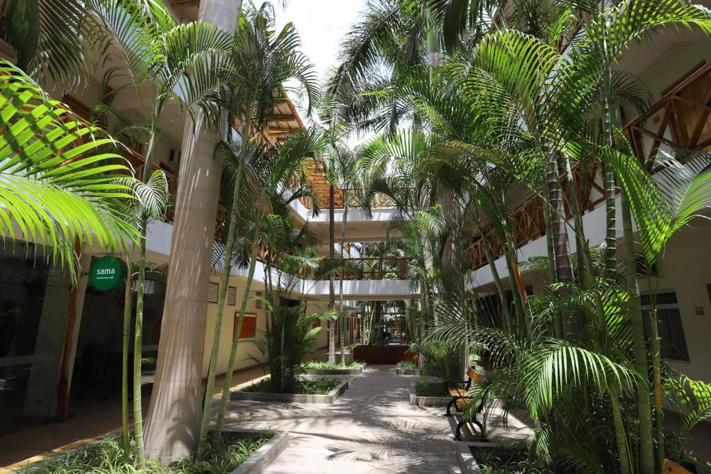
Nazca · 1 nuit
Casa Andina Standard
Mid-range fiable de la chaîne Casa Andina, petit-déj inclus, eau chaude garantie, late check-out demandé pour le bus de nuit vers Arequipa.
Boutique à 200m de la Plaza de Armas, score Booking 9.3+, terrasse rooftop avec vue sur le volcan Misti, piscine et salle de sport pour récupérer du bus de nuit. Petit-déjeuner inclus.
3*, pas en pente (rare à Cusco), chauffage présent, en face du Marché San Pedro. Demander chambre côté patio. Hôtel unique pour les 3 nuits Cusco · valises stables.
4* dans le centre (Calle Mexico, 1822), score Booking 9. Suite familiale 45 m² avec 2 lits doubles, kitchenette pour le mate de coca, chauffage à gaz pour les nuits à 3 650 m. Terrasse panoramique au 7ᵉ étage. À pied de Plaza Murillo, San Francisco et Mercado de las Brujas.
Hôtels chauffés inclus dans le tour 4×4 privé : Luna Salada sur le salar — murs et meubles taillés dans des blocs de sel — puis Tayka del Desierto à 4 600 m, refuge isolé dans le désert Siloli. Repas et oxygène à bord inclus.
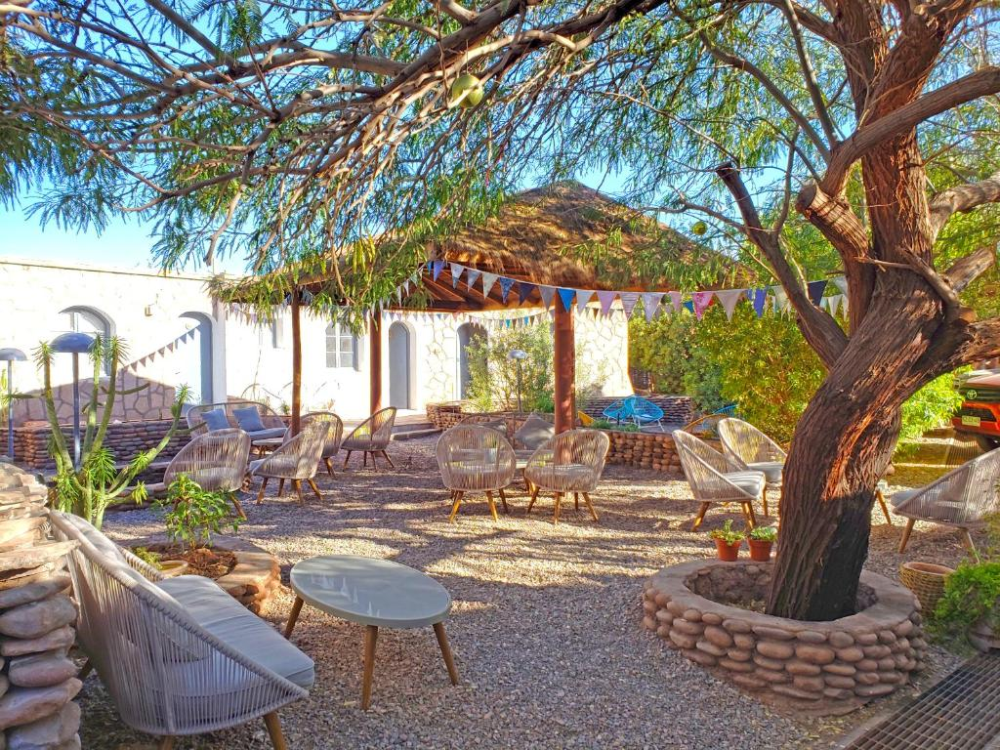
San Pedro de Atacama · 2 nuits
Hotel Jardín Atacama
À 5 min à pied de la Plaza, score Booking 8.9, chauffage fiable pour les nuits froides du désert. Astuce : douche idéalement avant 17h, l'eau chaude peut être inconstante en soirée.
Hébergement chez de la famille à Arica · trois nuits de vraie pause après la traversée Bolivie-Atacama, avant la dernière étape Tacna et le vol vers Lima.
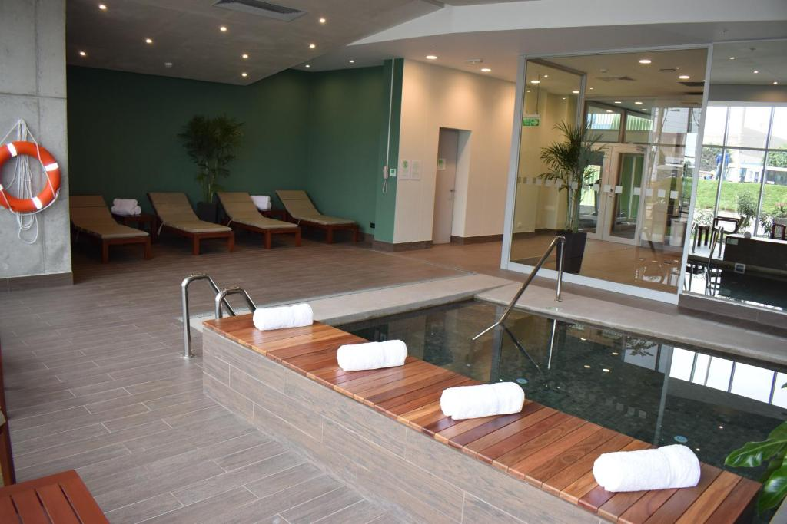
Lima · 1 nuit · dernière étape
Holiday Inn Lima Airport
À 5 min en shuttle gratuit du terminal Jorge Chávez, service 24/7 toutes les 30 min. Choisi pour zéro stress le matin du retour : pas de transfert taxi, pas de bouchons. Petit-déjeuner buffet inclus.
Les expériences qu'on garde en mémoire toute une vie.
6 septembre · Nazca
Mirador de la Panaméricaine
Le survol en Cessna des lignes de Nazca est abandonné, décision de groupe prise le 23 août après l'accident du 1er août — voir la note en bas de section. À la place : la tour de treize mètres du mirador, d'où l'on distingue les Mains et l'Arbre, puis l'après-midi aux acueductos de Cantalloc, trente-six puits en spirale qui captent encore l'eau du désert aujourd'hui.
8 septembre · Arequipa
Couvent Santa Catalina
Cité monastique du XVIᵉ siècle, ses ruelles peintes en bleu cobalt et terracotta forment une ville dans la ville. Trois à quatre heures de balade contemplative, un des sites les plus émouvants du Pérou colonial.
Boucle journée avec chauffeur privé, dans l'ordre inversé pour échapper aux bus de groupe : Ollantaytambo dès l'ouverture, Salinas de Maras (3 000 bassins de sel rose), Moray (laboratoire agricole circulaire inca), dîner sur la route.
13 septembre · La Paz
Cholitas wrestling 🥊
Spectacle de catch théâtral à El Alto, dimanche après-midi, avec l'association LIDER. Réservé et payé. Rendez-vous 15h35 au Tari Café, Calle Tarija — pas de pickup à l'hôtel, et le tour se termine à Sagárnaga 173, pas au point de départ.
16 au 18 septembre
Tour Salar d'Uyuni privé · 3 jours
4×4 privé Uyuni → San Pedro de Atacama avec guide francophone. Salar, Isla Incahuasi, désert Siloli, Laguna Colorada, Laguna Verde. Hôtels chauffés Luna Salada + Tayka del Desierto. Plan finalisé avec Joker Expedition (détails juste en dessous).
19 septembre · San Pedro
Vélo Quebrada de Catarpe 🚲
Sentier plat sur 7 km dans un canyon rouge à la sortie de San Pedro. VTT loués en ville le matin, retour pour l'apéro. Entre la rivière San Pedro et les murailles ocres de la Cordillera de la Sal.
19 septembre · San Pedro
SPACE Obs · soirée astro 🌌
Tour astronomique en français avec Alain Maury, télescope de 115 cm. Ciels parmi les plus purs au monde.
Puritama affiche complet sur nos dates (Fiestas Patrias). À la place, matinée avec chauffeur privé : Lagunas Escondidas de Baltinache — flottaison dans des lagunes turquoise, façon mer Morte — ou Vallée de la Lune le matin, quand il n'y a personne. Le vote est ouvert sur le groupe. Les bains chauds ne sont pas perdus pour autant : les Termas de Polques sont déjà au programme du 18/9, incluses dans le tour Joker.
Survol de Nazca · abandonné le 23 août
Le 1er août 2026, un avion de tourisme s'est écrasé pendant un survol des lignes. Treize personnes ont perdu la vie, onze passagers et les deux pilotes. La compagnie concernée, Aerodiana, a été suspendue par le ministère péruvien des Transports le temps de l'enquête. Il ne s'agit pas d'une suspension générale : les autres compagnies continuent d'opérer.
L'Espagne a officiellement recommandé à ses ressortissants de renoncer à ces survols, estimant que les appareils ne répondent pas à des exigences de maintenance équivalentes aux siennes. La Suisse n'a rien publié de spécifique à ce jour. À noter, parce que cela pèse dans la réflexion : l'appareil accidenté comptait bien deux pilotes à bord, ce qui était la garantie mise en avant depuis les réformes de 2010.
Le groupe a tranché le 23 août : on renonce. Rien n'avait été réservé, donc rien à annuler.
Itinéraires bis pour les aventuriers
Pour Nina & David qui aiment les sports extrêmes — propositions à choisir, en marge ou en remplacement du programme groupe. Les jours d'arrivée altitude (Cusco, La Paz, Uyuni) sont volontairement épargnés.
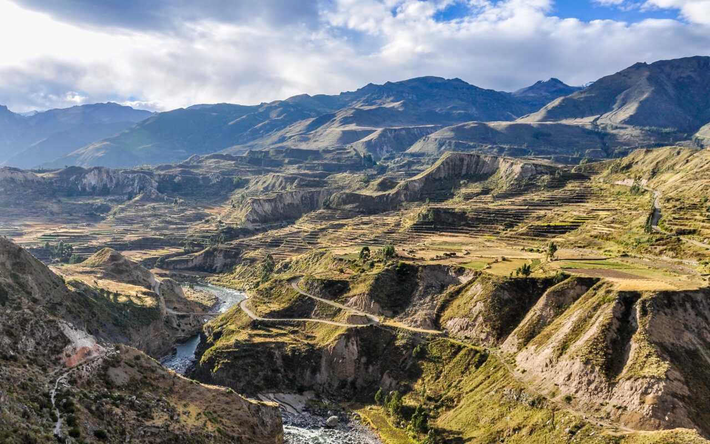
8 septembre · Cañón del Colca (day-trip)
Cañón del Colca · vol des condors 🦅
Le canyon le plus profond du monde habitable, descente vers Chivay puis Cruz del Cóndor où les condors andins planent à hauteur de regard au lever du soleil. Col à 4 910 m en chemin — bonne acclimatation avant Cusco, mais journée intense incompatible avec Santa Catalina prévue avec le groupe. ~50-80 USD/pers · départ 3h, retour 19h.
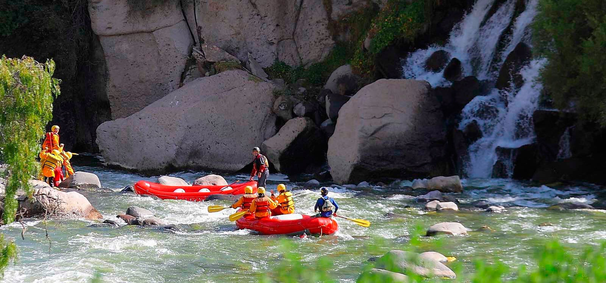
8 septembre · Arequipa
Rafting Río Chili 🌊
Demi-journée en classe III-IV, en marge de la sieste prévue après Santa Catalina. Encadrement Cusipata ou Carlos Zarate Adventures, combinaisons et casques fournis. Compatible avec le déjeuner Palomino. ~50-70 USD/pers · matin 8h-13h.
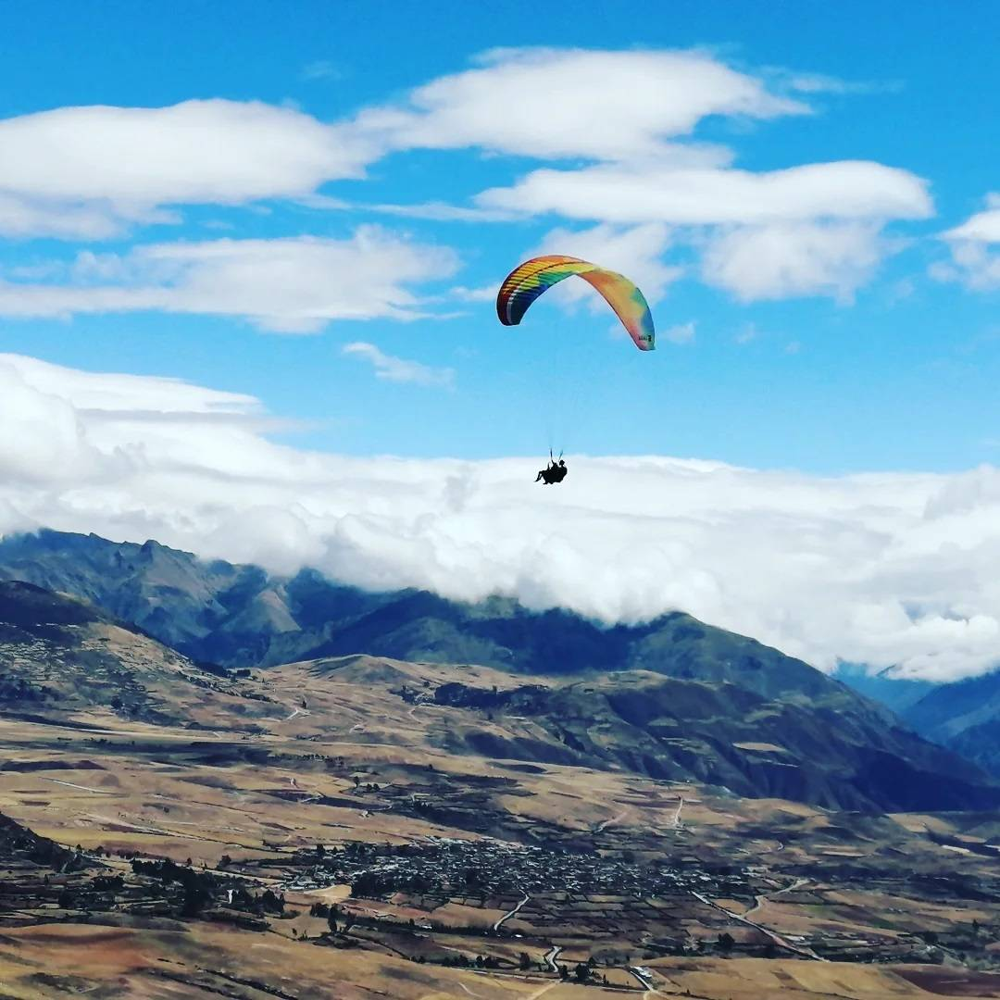
11 septembre · Cusco
Parapente Sacsayhuamán 🪂
Décollage depuis la colline qui domine Cusco, vol panoramique sur la ville et les ruines, atterrissage doux. Court et 100 % compatible avec le programme Cusco profond du jour. ~80-100 USD/pers · 1h-1h30 sur place.
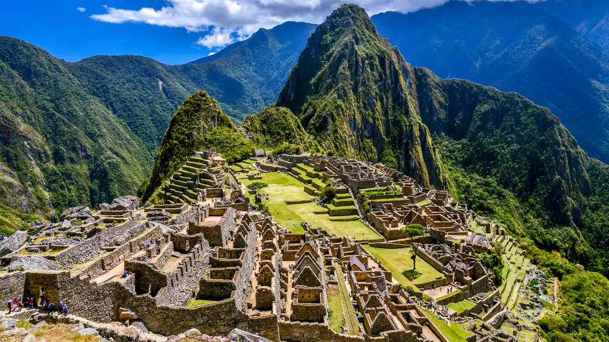
11 septembre · Machu Picchu (day-trip)
Machu Picchu en day-trip
L'option pour ne pas regretter l'avoir loupé. Réveil 4h, train Vistadome Ollantaytambo → Aguas Calientes, bus AC → MP, visite ~2-3h, retour Cusco vers 20h. Indépendant du programme groupe. ~200-250 USD/pers · billets à acheter dès que possible (haute saison).
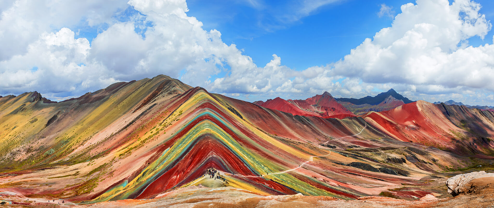
11 septembre · Rainbow Mountain (day-trip)
Vinicunca · montagne arc-en-ciel
Day-trip 14h jusqu'à 5 200 m d'altitude. Trek d'environ 2h depuis le parking, montagne aux strates colorées rouge-jaune-vert. Test physique sérieux et excellente acclimatation avant le tour Joker. ~50-100 USD/pers · départ 3h-4h.
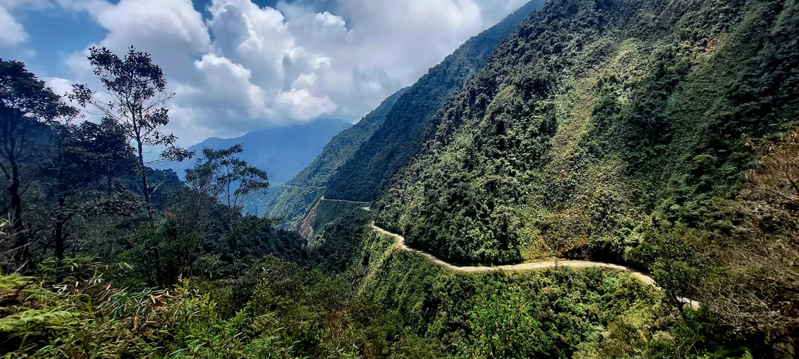
13 ou 14 septembre · La Paz / Yungas
Death Road VTT · la descente mythique 🚵
64 km de descente, de 4 700 m à 1 200 m sur la "route la plus dangereuse du monde" reconvertie en piste VTT. Cascades, jungle subtropicale, virages à pic. Journée entière avec Gravity Bolivia, la référence depuis 1998. À caser le 13 ou le 14 septembre. ~80-120 USD/pers · journée complète 7h-17h.
Le 6 088 m mythique au-dessus de La Paz, en day-trip jusqu'au camp 1 et au glacier (~5 200 m). Initiation crampons, piolet, marche sur la glace encadrée, redescente l'après-midi. Vrai goût d'alpinisme sans engager les 2-3 jours du sommet, gros boost d'acclimatation avant Uyuni. ~80-100 USD/pers · journée complète.
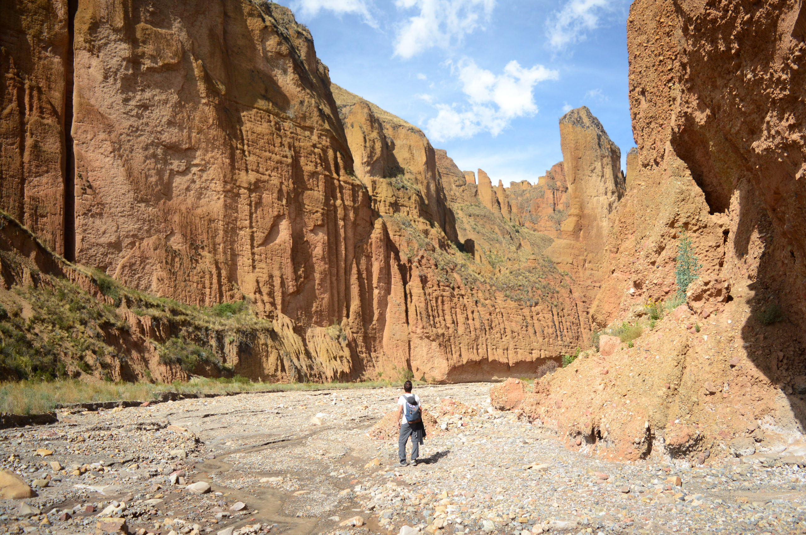
13 ou 14 septembre · Palca Canyon (day-trip)
Palca Canyon · le Grand Canyon de La Paz 🥾
Trek 4-6h au fond de gorges rouges sculptées par la rivière, peu touristique, altitude raisonnable (3 400 m). Alternative douce au Death Road si l'un des deux jours sert plutôt à respirer. Encadrement local depuis La Paz, marche soutenue mais pas technique. ~40-60 USD/pers · demi-journée à journée selon formule.
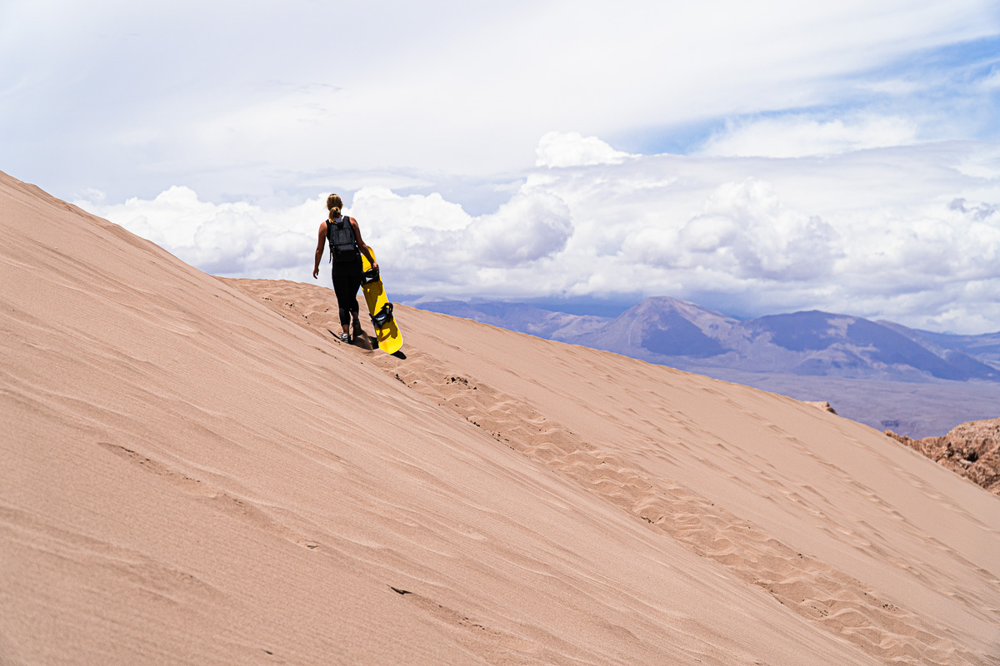
19 septembre · San Pedro
Sandboard Valle de la Muerte 🏂
Descentes de 60 m de dunes au cœur du désert d'Atacama, équipement type snowboard. Demi-journée matin, parfaitement compatible avec la sieste, le vélo Catarpe et SPACE Obs prévus en commun. ~30-50 USD/pers · matinée.
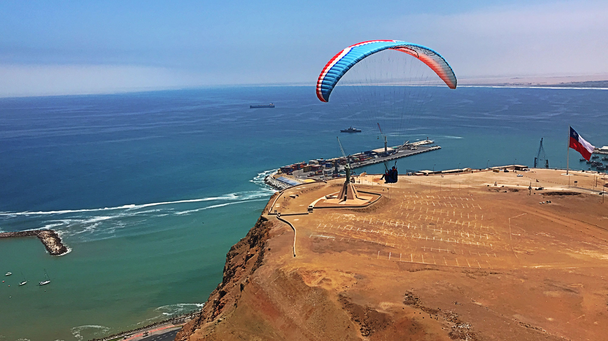
21-23 septembre · Arica
Parapente côtier · El Morro 🪂
Décollage depuis la falaise El Morro qui domine Arica, vol au-dessus du Pacifique, vues sur le port et la ville coloniale. Pendant que le groupe est en famille avec grand-papa. ~50-80 USD/pers · 30 min sur place.
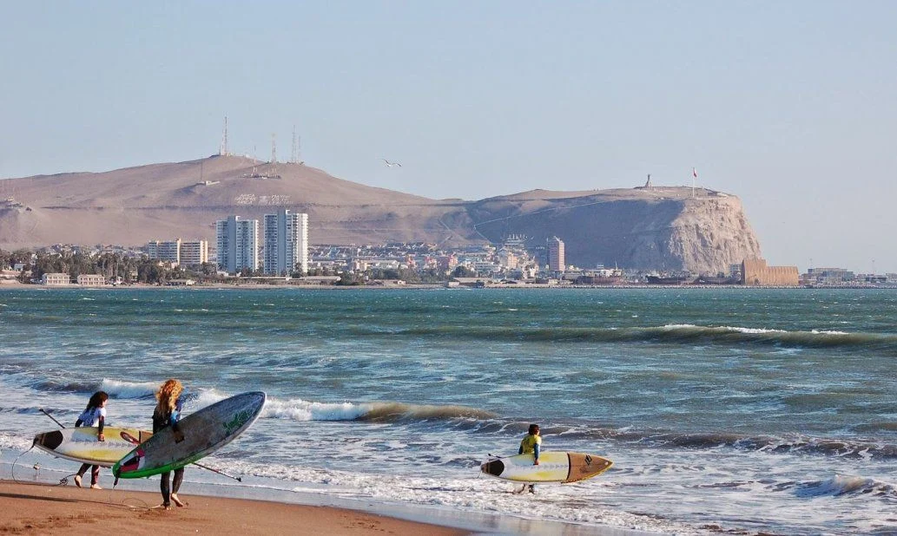
21-23 septembre · Arica
Surf à Arica 🌊
Capitale chilienne du surf : vagues consistantes de Las Machas et El Gringo, écoles locales pour cours débutants ou location de matos pour confirmés. À enchaîner sur les 3 jours libres. ~30-50 USD/pers · cours + matos demi-journée.
Nina & David — deux de ces envies se réservent tôt : les billets Machu Picchu (haute saison, les créneaux et le train Vistadome partent des semaines à l'avance) et le Death Road avec Gravity (les départs de septembre se remplissent). Si l'une des deux vous tente, dites-le sur le groupe maintenant : on est à un mois du départ, les créneaux Machu Picchu et les départs Gravity de septembre se ferment. Tout le reste se réserve sur place ou quelques jours avant.
Tour Salar · plan finalisé avec Joker
José Albino (Joker Expedition) a confirmé tout le plan. Acompte payé, place réservée pour les 16 au 18 septembre.
★ Intégralement payé
Joker Expedition · Option A
4 380 USD pour quatre · 1 095 USD par personne · tout inclus Acompte 50 % (2 190 USD = 1 850.11 CHF débités) réglé via WeTravel le 6 mai · solde 2 190 USD réglé le 12 août — le tour est intégralement payé
3 jours / 2 nuits · 16 au 18 septembre · pickup Uyuni vers 7h30 au bureau Todo Turismo (Av. Cabrera 158), arrivée San Pedro de Atacama l'après-midi du 18/9
2 véhicules 4×4 privés avec chauffeurs dédiés · plus d'espace et de confort pour les 4
Pickup à l'arrivée du bus de nuit · confirmé le 8 août : l'équipe de José attend au bureau Todo Turismo (Av. Cabrera 158, ~7h30), plus au terminal
Day-use à l'Hotel Atipax (propriété Joker) à Uyuni avant le départ du tour : transfert depuis le bus, douche chaude, petit-déjeuner de bienvenue et repos · confirmé pour les 4 sur la facture du 8 août
Hôtels chauffés garantis · Luna Salada (J1, murs en blocs de sel sur le salar) + Tayka del Desierto (J2, refuge boutique à ~4 600 m) · 2 chambres doubles privées avec chauffage et salle de bain
Guide francophone pour le tour · un seul guide pour les deux véhicules d'après la facture du 8 août — un 4×4 roulera sans guide, à prendre en compte dans la répartition
Oxygène à bord · « tanque de oxígeno a bordo » confirmé sur la facture du 8 août
Sac de couchage thermique haute qualité (-15 à -20 °C de confort) · confirmé par José en mai, mais absent de la liste des inclus de la facture d'août — reposé dans le mail du 13/8
Transfer privé jusqu'à San Pedro de Atacama · adapté au rythme du groupe
3 repas par jour, eau en bouteille et internet satellite en route · entrées de tous les sites du programme, Réserve Eduardo Avaroa comprise · confirmés sur la facture du 8 août
Sol de Mañana : réapparu dans l'itinéraire final de Joker · décision reportée au soir du 17/9 selon la forme, avec l'option de faire deux départs grâce aux deux véhicules
Acompte 50 % réglé le 6 mai (2 190 USD via WeTravel, débité 1 850.11 CHF sur Mastercard UBS). Place officiellement bloquée. Le solde de 2 190 USD a été réglé le 12 août par le même canal : le tour est intégralement payé avant le départ, il n'y a pas un dollar de cash à transporter pour Joker. José Albino a calé chaque détail sur le rythme du groupe — Carole en convalescence, montée progressive en altitude, hôtels chauffés, oxygène. L'extension à 4 préserve cet équilibre premium.
Budget · ce qui est confirmé
Trois blocs : transports, nuitées, activités. Les lignes 🟡 sont encore au tarif 2 pax (Arnaud + Carole) parce que la part de Nina & David n'est pas encore consolidée — codes de réservation des vols à recevoir, ou tarif Holiday Inn en cours d'alignement. Le pictogramme 💳 indique ce qui est déjà débité sur la carte d'Arnaud (à rembourser).
🚌 Transports
Poste
Détail
Statut
Coût (CHF)
Vol intercontinental aller
IB6660 · Madrid → Lima · 5/9 · 4 pax
✅ Réservé
déjà payé
Vol intercontinental retour
IB0124 · Lima → Madrid · 25/9 · 4 pax
✅ Réservé
déjà payé
Vol Arequipa → Cusco
⚠ LATAM LA2329 (était LA2321) · 9/9, décalé à 18h05 par LATAM le 25/8 · A+C code DJRSXI, sièges à reconfirmer · N+D à vérifier de leur côté
1 nuit · A+C 106.48 avec petit-déj + shuttle gratuit · N+D confirmée par l'hôtel (n° 63101049, ~145 USD, annulation gratuite jusqu'à 72h avant) — alignement de tarif demandé
🟡 tarifs à consolider
~190–230
Sous-total nuitées (Holiday Inn selon issue de l'alignement de tarif)
~1 860–1 900
🎯 Activités
Activité
Détail
Statut
Coût (CHF)
Tour Salar Joker Expedition
16-18/9 · 3 jours / 2 nuits · 4 pax tout inclus · 4 380 USD (1 095/pers, -19 % vs 2 pax)
✔ Intégralement payé (solde le 12/8)
~3 780
SPACE Obs · soirée astro privée FR
19/9 · 4 pax · forfait 500 000 CLP (~125/pers) · tour privé en français
✅ Confirmé groupe · attente accusé Alejandra
~500
Survol lignes de Nazca
❌ Abandonné le 23/8, après l'accident du 1er août — remplacé par le mirador de la Panaméricaine (gratuit)
❌ Abandonné
0
Cholitas wrestling · association LIDER
13/9 · 4 pax · General Admission · réservé via GetYourGuide le 14/8 (réf GYG83W9WHLZ4) · annulation gratuite jusqu'au 12/9
✔ Réservé et payé
75
Matinée du 20/9 · Baltinache ou Vallée de la Lune
San Pedro · 4 pax · Puritama complet (Fiestas Patrias) → chauffeur privé + entrées, vote en cours sur le groupe
🗳 Décision groupe
~100–160
Sous-total activités (confirmé + estimations) · écart = vote San Pedro
~4 455 – 4 515
Estimation globale ~7 870 à 7 970 CHF dans le tableau (l'écart tient au vote San Pedro du 20/9, le survol de Nazca n'y étant plus pour rien depuis son abandon), plus environ 1 200–2 000 CHF pour les repas et la marge imprévus (les petits-déj sont inclus dans la plupart des hôtels, le tour Joker couvre tous les repas pendant 3 jours, et les 3 jours à Arica sont quasi-gratuits chez le grand-papa d'Arnaud). Cible réaliste totale : ~9 150 CHF pour le groupe, soit ~2 290 CHF/personne.
Soit ~120 CHF par jour et par personne, tout compris. Et comme le tour Joker pèse 945 CHF/personne à lui seul (3 jours de premium privé), les 17 autres jours reviennent à environ 85 CHF/jour — soit à peu près le tarif d'un backpacker, pour un voyage qui aligne pourtant chauffeur privé Vallée Sacrée, hôtels boutique, transferts privés, soirée astro privée en français et tour Salar haut de gamme. Du quasi-luxe au prix du backpacker.
Avancement · ce qui est fait, ce qui reste
Mise à jour au fil des sessions de préparation · dernier point le 23 août 2026, à douze jours du départ.
Déjà fait
Nina & David rejoignent le voyage · vols intercontinentaux IB6660 / IB0124 communs aux 4
Passeports des 4 voyageurs validés · tous valables bien au-delà du 25 mars 2027 (aucun renouvellement nécessaire)
Itinéraire 21 jours défini · variante Cusco sans Machu Picchu (Vallée Sacrée approfondie)
Vols intercontinentaux Madrid ↔ Lima réservés (IB6660 et IB0124)
8 hôtels Booking shortlistés et confirmés sur la base 2 voyageurs (1 270 CHF total avec petits-déj)
Compagnies de bus validées (Cruz del Sur, Todo Turismo, Frontera del Norte)
Activités identifiées (survol de Nazca, Cholitas wrestling, SPACE Obs, matinée désert San Pedro)
Devis Joker Expedition reçu pour 4 · 4 380 USD au total optimisé (1 095/pers, -19 % vs 2 pax) · 2×4×4 privés · guide francophone · Luna Salada + Tayka del Desierto
Acompte Joker payé · 50 % = 2 190 USD via WeTravel le 6/5 (1 850.11 CHF débités sur Mastercard UBS) · place officiellement bloquée pour le 16-18 septembre
6 hôtels recontactés pour la chambre additionnelle de Nina & David · 4 par chat Booking (Madero, Palla, Holiday Inn, Jardín Atacama) · 1 par email à la centrale (Casa Andina Nasca) · 1 en cours d'échange (Monasterio Cusco)
Jardín Atacama (San Pedro) · chambre additionnelle pour Nina & David réservée via Booking à 257 CHF — Fiestas Patrias, prix légèrement plus haut que la résa originale d'avril mais cohérent avec la haute saison
Palla (Arequipa) · chambre additionnelle Nina & David confirmée par mail le 7/5 (Liseth, Reservas Palla) · queen size, 204 USD pour 2 nuits, petit-déj inclus, paiement au check-in · l'hôtel facilite le départ Colca si besoin (à signaler la veille)
Holiday Inn (Lima) · accord obtenu pour la chambre additionnelle par chat Booking, puis confirmée en propre (voir plus bas)
Monasterio San Pedro (Cusco) · chambre additionnelle confirmée pour Nina & David (cama matrimonial) en plus de la nôtre (deux camas individuales pour Carole & Arnaud), même tarif et même côté du patio · confirmation écrite de l'hôtel reçue (25/8) — réservation garantie, paiement intégral sur place, le lien d'acompte WhatsApp n'aura jamais été nécessaire
Cusco · transports confirmés via le Monasterio · transfert privé aéroport → hôtel le 9/9 (S/ 40) et journée Vallée Sacrée en camioneta privée pour les 4 (S/ 400)
Madero (La Paz) · chambre additionnelle pour Nina & David réservée séparément via Booking (12→15/9, 3 nuits) — l'hôtel a refusé d'ajouter au tarif initial (résa originale non remboursable). Demande de transfert privé depuis l'aéroport El Alto pour les 4 envoyée en parallèle.
Casa Andina Nazca · chambre additionnelle pour Nina & David réservée via Booking le 7/5 — tarif direct côté Casa Andina (101 USD prépayé non remboursable) plus cher et moins flexible. Late check-out abandonné (50 % puis 100 % d'une nuit pour rester jusqu'au bus de 22h30, conditions dissuasives) — on improvisera consigne & douche le 6/9.
Bus Cruz del Sur Lima → Nazca · 4 sièges contigus front upper-deck réservés pour le sam 5/9 départ 11h · 368 PEN total (~88 CHF, ~22 CHF/pers) · arrivée Nazca ~18h, journée de jour pour profiter de la descente sur le désert
Bus Cruz del Sur Nazca → Arequipa · 4 sièges Suite 160° pont haut bloc 2×2 (Carole+Arnaud / Nina+David) pour le dim 6/9 départ 22h30 · 568 PEN total (~136 CHF, ~34 CHF/pers) · arrivée Arequipa ~08h40 lun 7/9
SPACE Obs · décision groupe prise · tour privé en français pour les 4 le 19/9 (forfait 500 000 CLP, ~125 CHF/pers) · choix collectif validé sur WhatsApp pour le confort de Carole et l'expérience à 4 · mail de confirmation envoyé à Alejandra Maury le 7/5/2026
Préparation médicale validée pour Carole (post-cancer, accord oncologue, Diamox)
Topo sécurité par étape rédigé · Guides de visite (13 fiches) prêts à imprimer
Site web partagé avec le groupe
Bus de nuit La Paz → Uyuni réservé (12/7) · Todo Turismo cama pont bas le 15/9, 21h00 → ~7h30 · 4 sièges 32/33 + 35/36 · dîner et petit-déj servis à bord · 200.90 USD payés, billets dans le Drive
Holiday Inn Lima · chambre Nina & David confirmée · confirmation n° 63101049 reçue le 5/6 (2 lits queen, petit-déj, annulation gratuite jusqu'à 72h avant)
SPACE Obs, transfert El Alto (Madero) et note « chambre calme » Casa Andina · les trois réglés début juillet
Assurance voyage et rapatriement réglée pour les 4 · couverture condition pré-existante pour Carole comprise
Bus San Pedro → Arica réservé (8/8) · Frontera del Norte Salón Cama le 20/9, départ 20h20 du Terminal de San Pedro → arrivée Arica ~8h00 le 21/9 · 4 sièges (49, 50, 52, 53) · 123 600 CLP payés, billets dans le Drive. Les quatre transports terrestres du voyage sont désormais bouclés.
Préparatifs matériels bouclés (13/8) · van privé Green Lima prépayé pour l'arrivée du 5/9 (S/ 120, chauffeur à la Puerta 3) · change USD fait en billets neufs de 20 et 50 · pharmacie de voyage complète (Diamox, antibio préventif, anti-nausée, solaire haute protection) · cadeau de grand-papa choisi avec mamie
Vols domestiques de Nina & David consolidés · codes de réservation et sièges des 3 vols récupérés
Cholitas wrestling réservé et payé (14/8) · 4 places General Admission avec l'association LIDER le dimanche 13/9, 75 CHF pour les quatre (18.75/pers), annulation gratuite jusqu'au 12/9 · attention, pas de pickup à l'hôtel : rendez-vous à 15h35 au Tari Café (Calle Tarija) et fin du tour à Sagárnaga 173 vers 19h50, retour en taxi
Tour du Salar intégralement payé (12/8) · solde de 2 190 USD réglé via WeTravel, facture corrigée en USD au dossier · et pickup du 16/9 confirmé par José : son équipe attend au bureau Todo Turismo d'Uyuni (Av. Cabrera 158) vers 7h30, plus au terminal · passeports des 4 transmis pour le registre
Survol de Nazca abandonné (23/8) · décision de groupe après l'accident du 1er août, rien n'avait été réservé · remplacé par le mirador de la Panaméricaine et les acueductos de Cantalloc
Préparatifs finaux (23/8) · cash changé, eSIM prévue le week-end du 29-30/8, numéros d'urgence enregistrés directement dans les téléphones de chacun, pharmacie prise en charge par Carole & Nina
En attente
Joker · confirmation de réception du solde · José confirme personnellement une fois le paiement du 12/8 arrivé
Vol Arequipa → Cusco du 9/9 décalé (25/8) · LA2321 devient LA2329, 14h00 → 18h05 · à vérifier si Nina & David (même vol d'origine) ont reçu la même notification LATAM, et récupérer leurs nouveaux e-tickets
Holiday Inn Lima · alignement du tarif N+D sur notre tarif Booking (message du 12/7 sans réponse ; en levier : annulation gratuite et re-résa Booking possible jusqu'à 72h avant, donc pas de risque à trancher tard)
Matinée du 20/9 à San Pedro · vote du groupe toujours ouvert entre Baltinache et Vallée de la Lune (Puritama complet) · re-checker les annulations Puritama une semaine avant sur place
À faire — Arnaud
Restrictions alimentaires pour Joker · José les demande à l'avance pour les repas du tour — à lui transmettre dans la foulée du paiement
Caler la matinée du 20/9 dès le vote du groupe : chauffeur privé via le Jardín Atacama (+ entrées Baltinache le cas échéant)
eSIM Amérique du Sud (Airalo ou équivalent, couvre PE / BO / CL) pour les 4 · à activer la veille du départ
Photocopies des 4 passeports + police d'assurance dans une pochette séparée
Documents du voyage
Tous les billets, confirmations d'hôtels et photos de passeports dans un dossier Google Drive partagé.
Classés par catégorie : Vols · Bus · Hôtels · Activités · Passeports
David et Nina, glissez dans ce dossier vos propres billets d'avion (vous avez vos réservations à part) ainsi que tout autre document utile — assurance voyage, copie de passeport, carnet de vaccination. L'idée : qu'on ait tout regroupé au même endroit en cas de pépin sur place.
Astuce mobile : dans l'app Google Drive, ouvrir le dossier puis « Disponible hors ligne » sur chaque fichier important — vous pourrez consulter vos billets sans réseau au terminal de bus ou à l'aéroport.
Comment on voyage
Quelques habitudes simples pour qu'on profite tranquillement de chaque étape.
Téléphone discret en transit. On le sort pour la photo, on le range en remontant dans le bus ou le micro.
Sac devant dans les marchés, les transports et les foules. Geste anodin, ça change tout.
Bijoux, montres voyantes et tee-shirt « I love Cusco » au tiroir. On part avec le sobre.
Cash réparti. Une petite coupure accessible, le reste dans une poche planquée. Retraits dans une banque, pas un ATM de rue.
Des dollars US en billets neufs. Pour la Bolivie surtout : coupures de 20 et 50 impeccables — ni déchirure, ni tampon, ni gribouillis — sinon les casas de cambio les refusent. Compter environ 150 USD par personne : les bancomats boliviens distribuent mal aux cartes étrangères, alors qu'au Pérou on retire sans souci sur place et qu'au Chili la carte passe partout. On change un petit montant à El Alto en arrivant (transfert, premier soir), le reste en ville les jours suivants.
Taxis via app uniquement dans les villes (Uber, Cabify, InDriver) ; transferts pré-arrangés ailleurs. Jamais le taxi qui hèle.
Verres sous surveillance dans les bars (Lima, La Paz surtout).
Rien dans la valise qu'on serait triste de ne pas ramener. Bijou de famille, carnet, l'objet qui a une histoire — ça reste à la maison.
Pérou et Bolivie ne sont pas dangereux, juste pas un resort. La rue ne nous oublie pas comme un all-inclusive, et c'est aussi pour ça qu'on y va.
Numéros utiles
À garder dans le sac, dans le portefeuille, et dans le téléphone.


Comment on voyage
Quelques habitudes simples pour qu'on profite tranquillement de chaque étape.
Pérou et Bolivie ne sont pas dangereux, juste pas un resort. La rue ne nous oublie pas comme un all-inclusive, et c'est aussi pour ça qu'on y va.